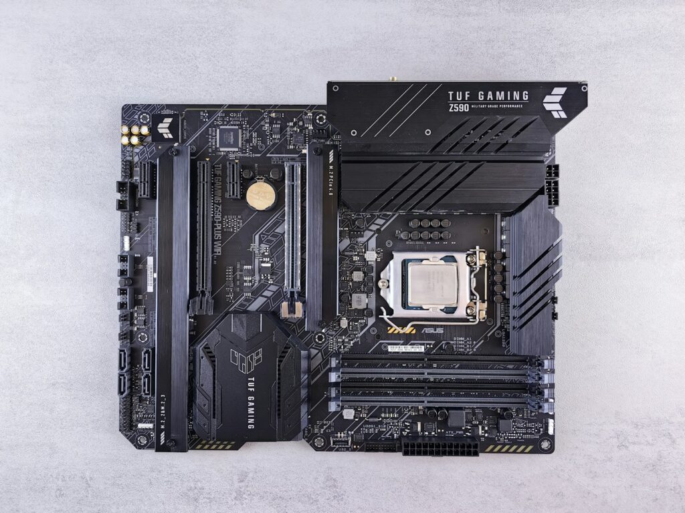
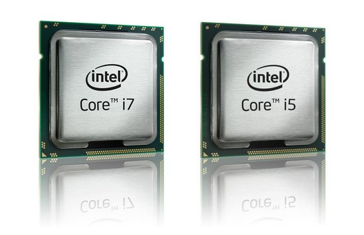
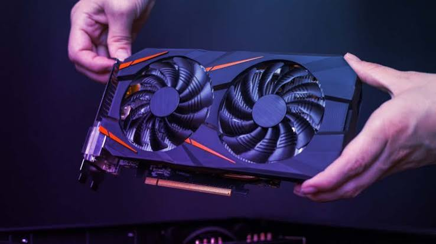
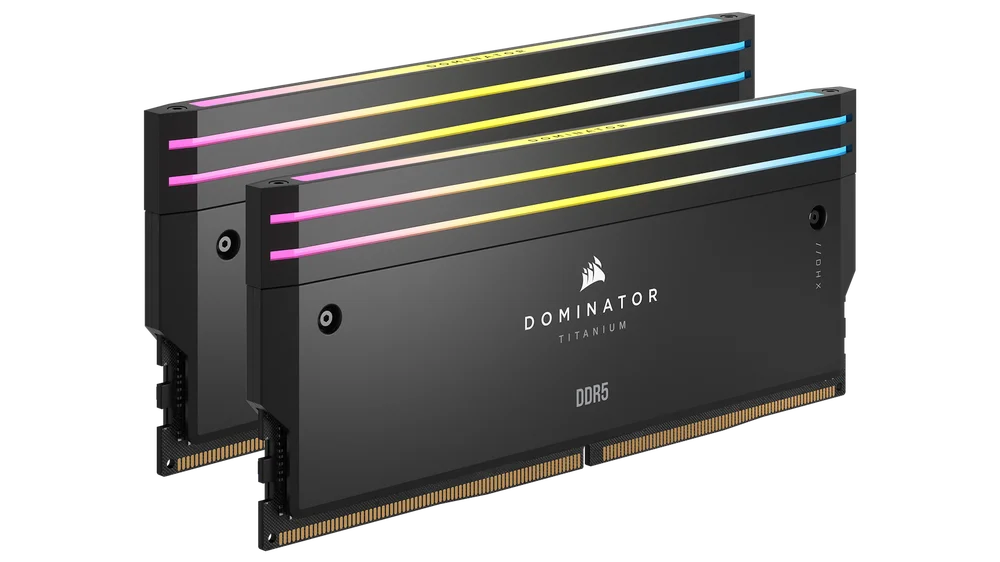
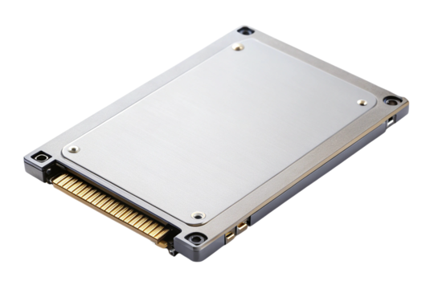
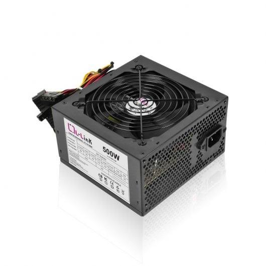
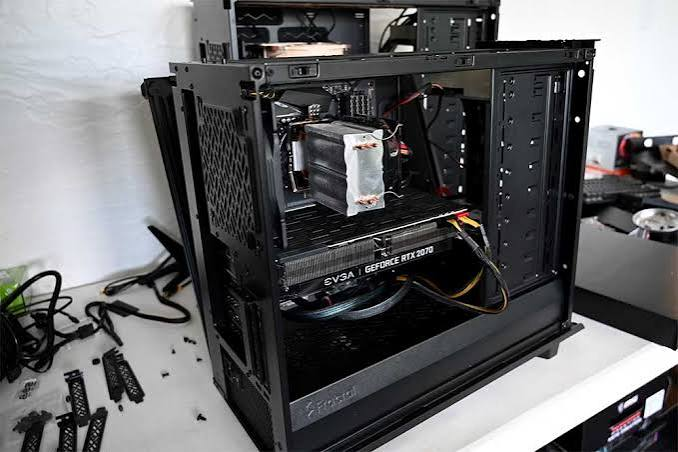
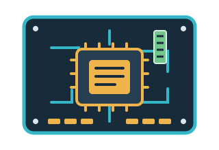

Galería de ByteFix
Bienvenido a nuestra galería. Aquí podrás encontrar imágenes de componentes informáticos, reparaciones y montajes de ordenadores realizados por ByteFix.
Nuestros componentes y trabajos








Vídeo de reparación
En este apartado mostramos un vídeo de ejemplo sobre el proceso de montaje y mantenimiento de un ordenador.
El vídeo muestra el montaje de los componentes principales de un ordenador de sobremesa.
Audios de ByteFix
Escucha dos ejemplos de sonidos relacionados con el funcionamiento de un ordenador.
Sonido de un ventilador
Grabación del sonido de un ventilador de ordenador en funcionamiento.
Sonido de inicio del ordenador
Ejemplo de sonido de inicio de un equipo informático.
Vídeo externo de YouTube
También puedes consultar vídeos externos relacionados con el montaje y mantenimiento de ordenadores.
"Ubicación de ByteFix
Puedes consultar el siguiente mapa para conocer nuestra ubicación de referencia en Granada.
Autoría de las imágenes y recursos
Las imágenes y archivos multimedia de esta galería son recursos de ejemplo para el proyecto educativo. Se deberá indicar el autor y la licencia de cada recurso utilizado.
El logotipo y las ilustraciones SVG son diseños propios de ByteFix.